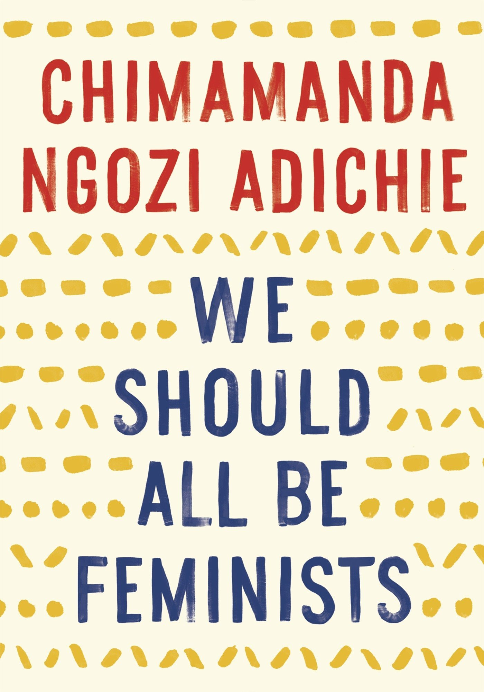
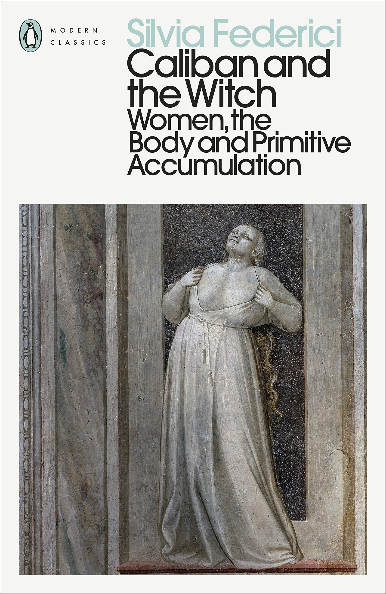
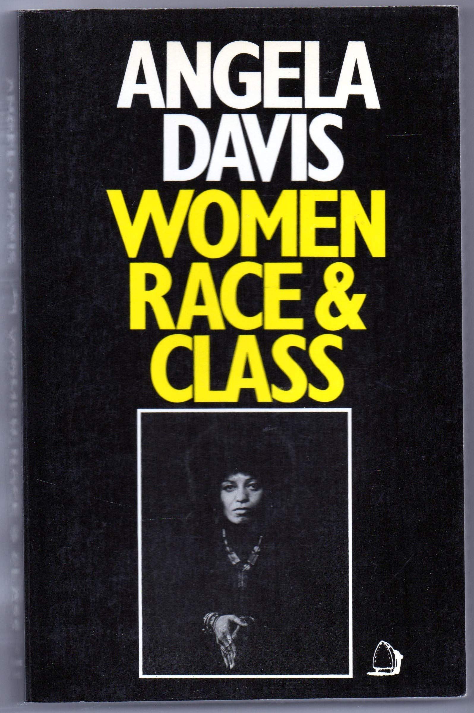
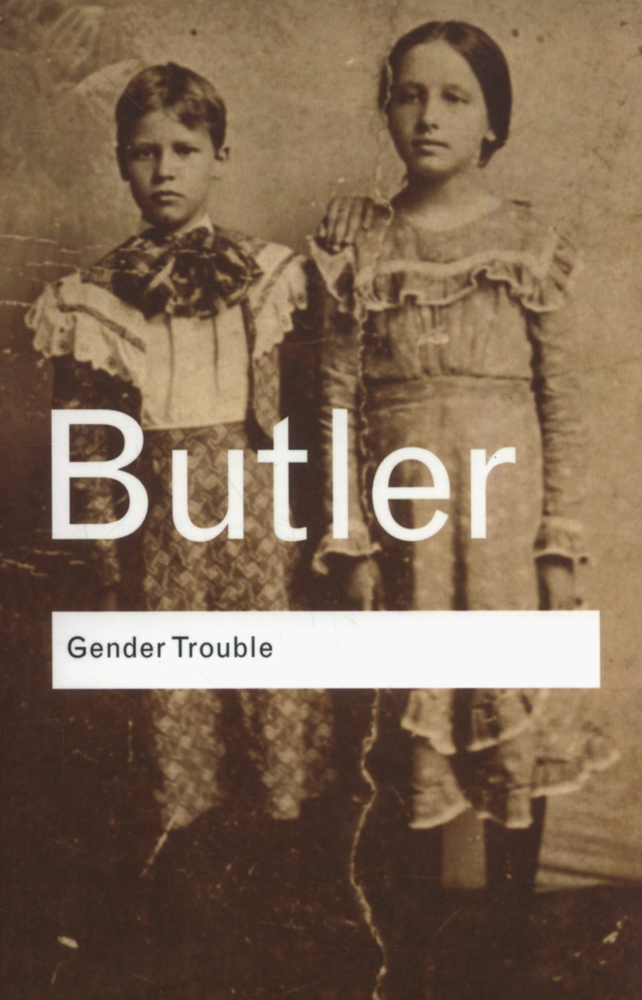
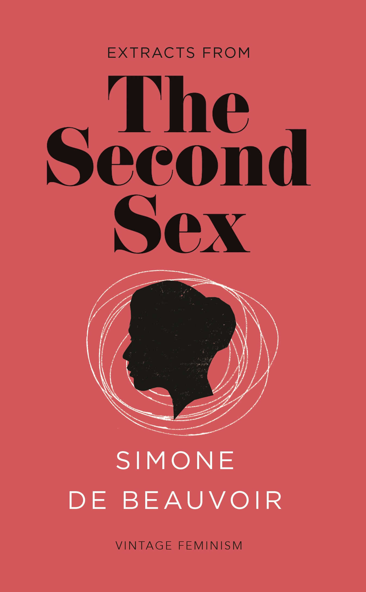
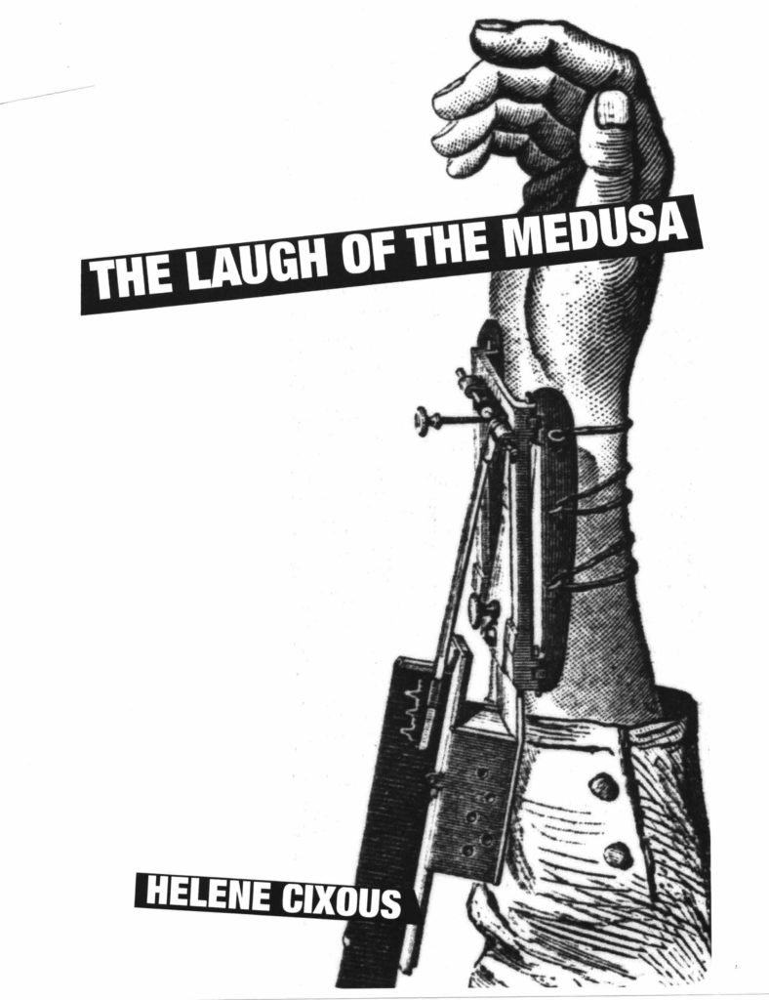

Published in 1929, Woolf’s essay took on the established literary criticism of the time, which claimed women were inherently lesser writers and creators by virtue of their gender. Instead, Woolf pointed to the vast, systemic education and economic failures that stifled women writers of the time. As one of the foundational pieces of feminist literary critique, you might expect that Woolf’s words lost their potency over the years, but her clever, incisive perspective remains just as inspiring today as it was when it was published.
What does feminism mean today? In this personal, eloquently argued essay - adapted from her much-admired TEDx talk of the same name - Chimamanda Ngozi Adichie offers readers a unique definition of feminism for the twenty-first century, one rooted in inclusion and awareness. Drawing extensively on her own experiences and her deep understanding of the often masked realities of sexual politics, here is one remarkable author's exploration of what it means to be a woman now - an of-the-moment rallying cry for why we should all be feminists.
Literary Nonfiction. CALIBAN AND THE WITCH is a history of the body in the transition to capitalism. Moving from the peasant revolts of the late Middle Ages to the witch-hunts and the rise of mechanical philosophy, Federici investigates the capitalist rationalization of social reproduction. She shows how the battle against the rebel body and the conflict between body and mind are essential conditions for the development of labor power and self-ownership, two central principles of modern social organization.
First published in 1982 and now reissued, a collection of essays from this political commentator which examines the lives and achievements of black women under slavery and white women workers under industrialism.
One of the most talked-about scholarly works of the past fifty years, Judith Butler's GENDER TROUBLE is as celebrated as it is controversial. Arguing that traditional feminism is wrong to look to a natural, 'essential' notion of the female, or indeed of sex or gender, Butler starts by questioning the category 'woman' and continues in this vein with examinations of 'the masculine' and 'the feminine'. Best known however, but also most often misinterpreted, is Butler's concept of gender as a reiterated social performance rather than the expression of a prior reality. Thrilling and provocative, few other academic works have roused passions to the same extent.
Of all the writing that emerged from the existentialist movement, Simone de Beauvoir's groundbreaking study of women will probably have the most extensive and enduring impact. It is at once a work of anthropology and sociology, of biology and psychoanalysis, from the pen of a writer and novelist of penetrating imaginative power. THE SECOND SEX stands, four decades after its first appearance, as the first landmark in the modern feminist upsurge that has transformed perceptions of the social relationship of man and womankind in our time.
Cixous is issuing her female readers an ultimatum of sorts: either they can read it and choose to stay trapped in their own bodies by a language that does not allow them to express themselves, or they can use their bodies as a way to communicate. "The Laugh of the Medusa" is an extremely literary essay and well-known as an exhortation to a "feminine mode" of writing; the phrases "white ink" and "écriture féminine" are often cited, referring to this desired new way of writing. It is a strident critique of logocentrism and phallogocentrism, having much in common with Jacques Derrida's earlier thought. The essay also calls for an acknowledgment of universal bisexuality or polymorphous perversity, a precursor of queer theory's later emphases, and swiftly rejects many kinds of essentialism which were still common in Anglo-American feminism at the time. The essay also exemplifies Cixous's style of writing in that it is richly intertextual, making a wide range of literary allusions.